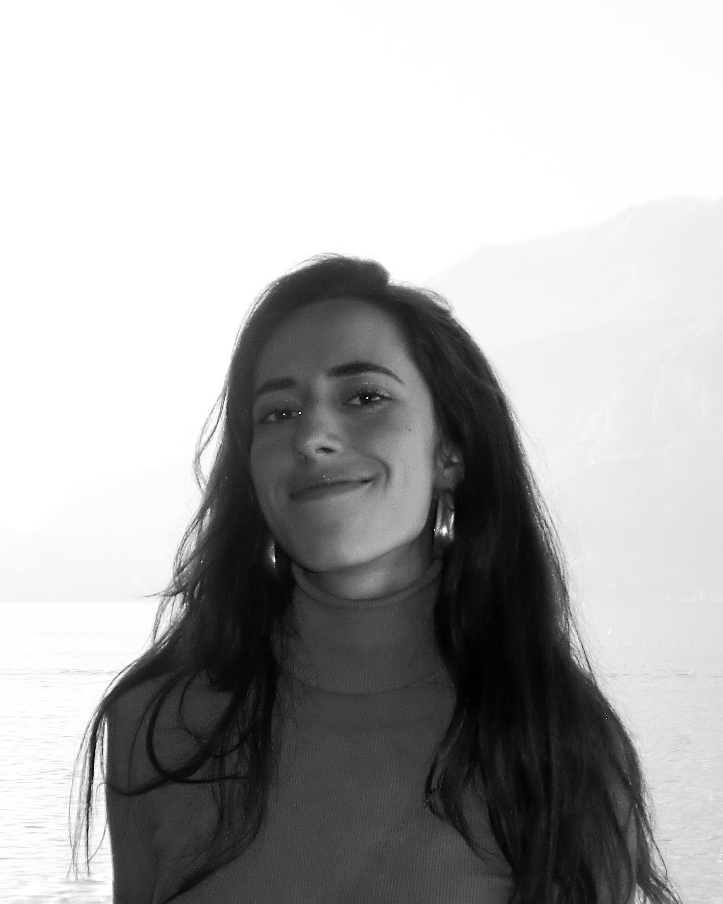

01
Search & SEO
SalesBot, B2B startup — 2024
Google Ads built from zero: keywords, copy, budget. SEO and web content, plus cross-platform campaigns on Instagram, TikTok and Facebook. The level where every euro is measurable.
María Pelayo Fernández
I've worked the full funnel from the agency side: performance, paid media, and brand activations for 20,000 people. Now I'm looking to build one brand from the inside.

images/portrait-maria.jpg / .png · 4:5 · min 1200×1500
Scroll
Brands I've worked on
The agency taught me the whole funnel in very little time. SEO and Google Ads at a B2B startup, positioning and pricing at a luxury one, over €100,000 a month in media for Mercedes-Benz, Sanofi and VIVO, and brand activations for 20,000 people with Coca-Cola, VELO and GLO.
Automotive, pharma, tech, FMCG, luxury and fashion, each with its own logic. It gives you breadth, speed, and a fairly precise idea of which levers actually move a business.
What I want next is depth. One brand, held over time: its positioning, its long game, and the ownership that comes with it.
Most people my age have seen either performance or brand. I've worked both from the inside, in that order.
SalesBot, B2B startup — 2024
Google Ads built from zero: keywords, copy, budget. SEO and web content, plus cross-platform campaigns on Instagram, TikTok and Facebook. The level where every euro is measurable.
LOGO, luxury startup — 2025
Market and competitor analysis feeding pricing and positioning decisions, and customer insight used to sharpen the value proposition. Where the question stops being cost per click and becomes what the brand is worth.
Omnicom Media Group — 2025 / 2026
Over €100,000 a month for Mercedes-Benz, Sanofi and VIVO, across paid media and SEM. Performance read campaign by campaign, channel by channel, and budget moved to wherever the numbers said it should go.
WPP — 2026 to now
Large-scale activations for Coca-Cola, VELO and GLO: 10+ projects, up to 20,000 attendees, own budgets of up to €70,000. The top of the funnel, where the brand stops being a message and becomes something people stand inside.
images/exp-wpp-activation.mp4 or .jpg / .png · 3:2 · min 1800×1200
Cross-functional coordination with creative, production and operations teams, and with external suppliers. Client presentations, and activation planning from first concept through to on-site delivery. Smaller pieces of work across other accounts in the same period: Allianz, Cruzcampo and HBO.
images/exp-omnicom-media.jpg / .png · 3:2 · min 1800×1200
Three very different categories running at once — automotive, pharma and tech — each with its own buying cycle, its own constraints and its own definition of a good result. Power BI dashboards built for two audiences at the same time: internal teams who needed the detail, and clients who needed the recommendation and the reason behind it.
images/exp-cph-operations.mp4 or .jpg / .png · 3:2 · min 1800×1200
Stakeholder communication throughout, working entirely in English. Vogue was among the names on site, which matters mainly as a measure of the standard: at that level nothing can visibly go wrong, and things go wrong anyway.
During university
Market and competitor analysis for pricing and positioning decisions. Customer insight used to sharpen the value proposition.
Cross-platform campaigns on Instagram, TikTok and Facebook. Google Ads from scratch: keywords, copy, budget. Competitive analysis, SEO and web content.
2021 to now
Degree, and both agency roles. Home base.
2024 / 2025
A full year at Milano-Bicocca, and two months in retail selling face to face entirely in Italian.
January 2026
Event operations for 1,000+ guests, working entirely in English.
August 2023
Design intensive at Central Saint Martins: research, concept, communicating an idea.
Four years of finance, strategy, operations and marketing, with the commercial grounding the rest of this page runs on.
A full academic year living in Milan. Alongside it, two months working in retail (Dec 2024 – Jan 2025), selling face to face entirely in Italian.
Further training and university activity
Twelve months of applied AI, data analytics, digital business and project management, taken alongside a full-time job.
Where I learned to validate a market, build a value proposition and defend it in a pitch.
Research, conceptualisation, and communicating a creative idea so that other people get it.
Tools
Marketing has always run on tools, and the tools have just changed underneath everyone. So I learned this one the way I learned Italian: formally and then daily. Twelve months of applied AI, data analytics and digital business at UNIR, taken alongside a full-time job, and use every working day since.
Not as a novelty. As the thing that decides how much one person can get done, and how fast a team can test an idea before committing budget to it.
This site is the clearest proof I can hand over: I directed and edited it, AI designed and built it.
I sew, and I've been doing it for five years without anyone teaching me. I also paint. The point isn't the clothes — it's that I take on difficult things on my own initiative, and I'm still there years later.
I read a lot of both. What I'm actually after is why people decide what they decide, which is more or less the whole job. It's the part of marketing that doesn't change when the channels change.
Volunteering: Cáritas since 2013, and monthly visits to patients with no one to sit with them at Hospital Clínico San Carlos.
Brand strategy, brand marketing, go-to-market or growth, in-house. Based in Madrid and open to relocating, working in Spanish, English or Italian.